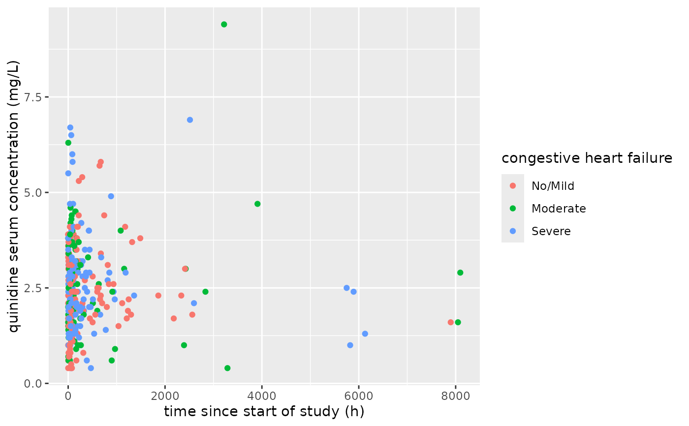
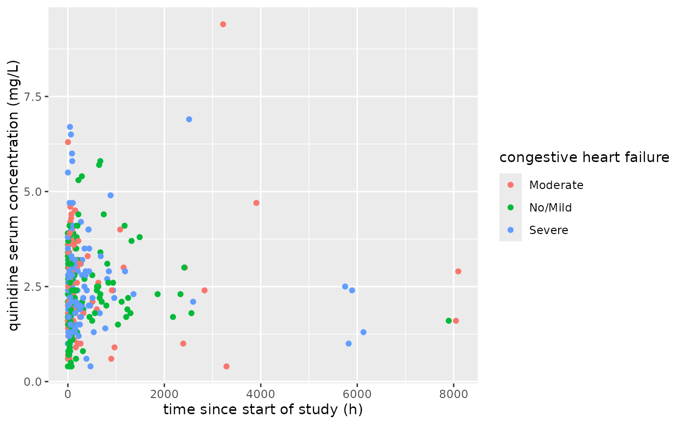

Prepares data for ggplot. Generic, with methods for data.frame, and decorated.
See also
Other ggready:
ggready.data.frame(),
ggready.decorated()
Examples
file <- system.file(package = 'yamlet', 'extdata','quinidine.csv')
x <- decorate(file)
decorations(x, Weight)
#> - Weight
#> - label: subject body weight
#> - guide: kg
decorations(as.data.frame(x), Weight) # downgrade still has attributes
#> - Weight
#> - label: subject body weight
#> - guide: kg
class(x)
#> [1] "decorated" "data.frame"
class(ggready(as.data.frame(x)))
#> [1] "ggready" "decorated" "data.frame"
class(ggready(x))
#> [1] "ggready" "decorated" "data.frame"
class(ggready(resolve(x)))
#> [1] "ggready" "decorated" "data.frame"
x <- ggready(x)
library(magrittr)
library(ggplot2)
# Here we filter on-the-fly
# without loss of attributes.
# Notice mg/L rendering; this is actually part of an expression.
file %>%
decorate %>%
filter(!is.na(conc)) %>%
ggready %>%
ggplot(aes(x = time, y = conc, color = Heart)) +
geom_point()

# By default ggready resolves everything that is decorated.
# But we can intervene to resolve selectively,
# And further intervene to 'ggready' selectively.
#
x <- file %>% decorate %>% filter(!is.na(conc))
x %>%
resolve(conc, time) %>% # Heart left unresolved!
ggready(conc, Heart, resolve = FALSE) %>% # time left unreadied!
ggplot(aes(x = time, y = conc, color = Heart)) + geom_point()

# Still, all the labels were actually expressions:
x %>%
resolve(conc, time) %>%
ggready(conc, Heart, resolve = FALSE) %>%
decorations(conc, time, Heart)
#> - conc
#> - label: [ '*', [ '*', "quinidine" * " " * "serum" * " " * "concentration", ], (mg/L) ]
#> - units: mg/L
#> - title: quinidine serum concentration (mg/L)
#> - time
#> - label: time since start of study
#> - units: h
#> - title: time since start of study (h)
#> - Heart
#> - label: [ '*', [ '*', "congestive" * " " * "heart", ], failure ]
#> - guide: No/Mild, Moderate, Severe